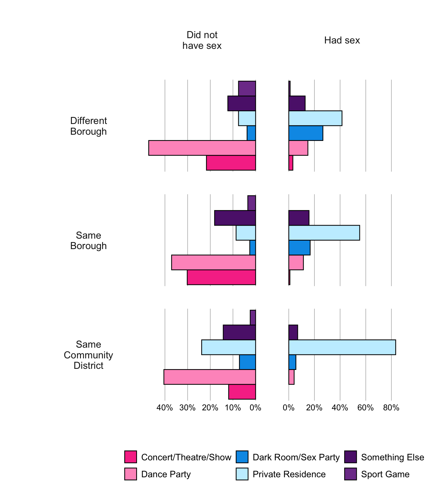
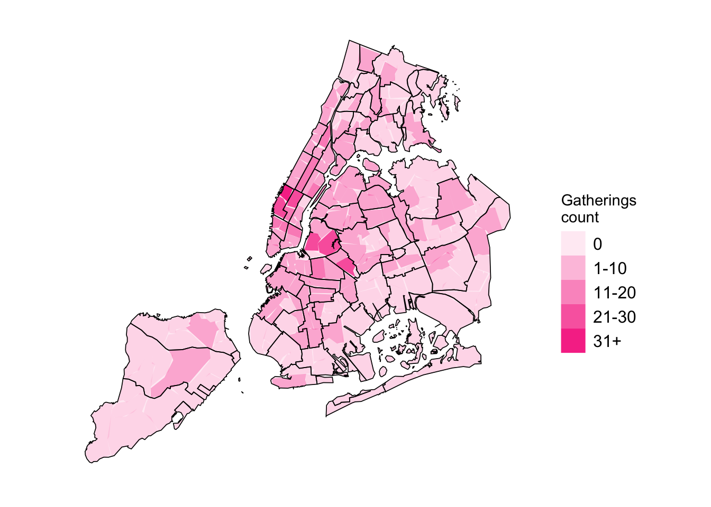

Code
make_plotdata_placetype_bar_grid() |>
plot_bar_stratified2() +
scale_axis_mpxnyc() +
scale_fill_mpxnyc(name = "") +
theme_mpxnyc_bar_places() 
make_plotdata_placetype_bar_grid() |>
plot_bar_stratified2() +
scale_axis_mpxnyc() +
scale_fill_mpxnyc(name = "") +
theme_mpxnyc_bar_places() 
Of the \(604\) locations at which participant had physical or sexual contact in a group setting (contact venues), about two out of five were private residences, and about a quarter were dance parties. More than half of the contact venues were in Manhattan, while less than a third were in the Brooklyn. A quarter of all contact venues were in the same community as the participant’s residence, a third were in a different borough, and the remainder were in the same borough as home, but a different community district.
make_tabledata_places() |>
draw_table_by_placeSex()| Variable |
Physical or sexual contact in group setting in past 4 weeks
|
p-value | ||
|---|---|---|---|---|
| Did not have sex N = 2641 |
Had sex N = 3521 |
Overall N = 6161 |
||
| Place type | ||||
| Concert/Theatre/Show | 63 (24%) | 4 (1.1%) | 67 (11%) | |
| Dance Party | 110 (42%) | 33 (9.4%) | 143 (23%) | |
| Dark Room/Sex Party | 10 (3.8%) | 52 (15%) | 62 (10%) | |
| Private Residence | 28 (11%) | 222 (63%) | 250 (41%) | |
| Something Else | 40 (15%) | 40 (11%) | 80 (13%) | |
| Sport Game | 13 (4.9%) | 1 (0.3%) | 14 (2.3%) | |
| Place borough | ||||
| Bronx | 6 (2.3%) | 18 (5.1%) | 24 (3.9%) | |
| Brooklyn | 84 (32%) | 96 (27%) | 180 (29%) | |
| Manhattan | 144 (55%) | 188 (53%) | 332 (54%) | |
| Queens | 29 (11%) | 48 (14%) | 77 (13%) | |
| Staten Island | 1 (0.4%) | 2 (0.6%) | 3 (0.5%) | |
| Distance from home | ||||
| Same Community District | 42 (16%) | 144 (41%) | 186 (30%) | |
| Same Borough | 116 (44%) | 114 (32%) | 230 (37%) | |
| Different Borough | 106 (40%) | 94 (27%) | 200 (32%) | |
| Data source: MPX NYC 2022 | ||||
| 1 n (%) | ||||
Contact venues at which participants had sexual contact (rather than non-sexual physical contact) were overwhelmingly private residences whereas contact venues at which they had non-sexual physical contact were mostly dance parties (see Figure 9.1). The closer to home a location was, the more likely it was to be a private residence and the more likely it was the site of sexual contact. By contrast, the further from home a contact venue was, the more likely it was to be a dance party.
make_tabledata_gatherings <- function(){
targets::tar_read(data_bipartite_graph_collected) |>
tidygraph::activate(edges)|>
data.frame() |>
dplyr::group_by(place_borough, place_community, place_neighborhood) |>
dplyr::summarize(count = dplyr::n()) |>
dplyr::rename(borough = place_borough, community = place_community, neighborhood = place_neighborhood) |>
dplyr::arrange(-count) |>
dplyr::ungroup() |>
dplyr::filter(!is.na(borough)) |>
dplyr::mutate(proportion = count / sum(count))
}
scale_labels <- c("0", "1-10", "11-20", "21-30", "31+")
mpxnyc::neighborhood_sf_obj |>
sf::st_as_sf() |>
dplyr::left_join(make_tabledata_gatherings(), by = "neighborhood") |>
dplyr::mutate(count = ifelse(is.na(count), 0, count)) |>
dplyr::mutate(count_cat = cut(count, c(-1,0,10,20,30,100), scale_labels)) |>
dplyr::arrange(-count) |>
ggplot2::ggplot() +
ggplot2::geom_sf(data = mpxnyc::community_sf_obj, fill = "white", linewidth = 0, color = NA) +
ggplot2::geom_sf(data = mpxnyc::community_sf_obj, fill = "#F73C95", linewidth = 0, color = NA, alpha = 0.1) +
ggplot2::geom_sf(ggplot2::aes(alpha = count_cat), linewidth = 0, fill = "#F73C95", color = "#FF99C5") +
ggplot2::geom_sf(data = mpxnyc::community_sf_obj, fill = NA, linewidth = 0.3, color = "black") +
ggplot2::scale_alpha_discrete("Gatherings\ncount") +
theme_mpxnyc_blank(
plot.background = ggplot2::element_rect(fill = "white"),
legend.position = "right"
)
table_data <- make_tabledata_gatherings() |>
dplyr::filter(count > 16) |>
dplyr::ungroup() |>
dplyr::select(neighborhood, community, borough, count, proportion)
labelled::var_label(table_data$neighborhood) <- "Neighborhood"
labelled::var_label(table_data$community) <- "Community district"
labelled::var_label(table_data$borough) <- "Borough"
labelled::var_label(table_data$count) <- "Count of gatherings"
labelled::var_label(table_data$proportion) <- "Proportion of gatherings"
table_data |>
gt::gt()|>
gt::tab_header(
title = "Most popular neighborhoods for gatherings",
subtitle = "MPX NYC 2022"
) |>
gt::fmt_percent(proportion, decimals = 0)| Most popular neighborhoods for gatherings | ||||
|---|---|---|---|---|
| MPX NYC 2022 | ||||
| Neighborhood | Community district | Borough | Count of gatherings | Proportion of gatherings |
| Hell's Kitchen | MN04 | Manhattan | 83 | 13% |
| East Williamsburg | BK01 | Brooklyn | 29 | 5% |
| Bushwick (East) | BK04 | Brooklyn | 26 | 4% |
| Williamsburg | BK01 | Brooklyn | 23 | 4% |
| Chelsea-Hudson Yards | MN04 | Manhattan | 23 | 4% |
| Midtown-Times Square | MN05 | Manhattan | 22 | 4% |
| Bedford-Stuyvesant (West) | BK03 | Brooklyn | 20 | 3% |
| West Village | MN02 | Manhattan | 18 | 3% |
| Midtown South-Flatiron-Union Square | MN05 | Manhattan | 17 | 3% |
| Central Park | MN64 | Manhattan | 17 | 3% |
plot_icon(icon_name = "taco", color = "dark_green", shape = 4)